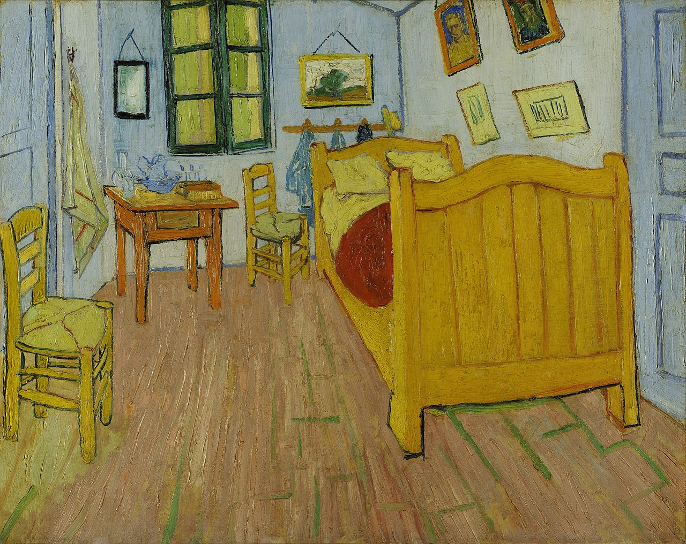

On View Now
Current Exhibitions
Experience the definitive collection of Vincent van Gogh's most iconic works, brought together for the first time in a decade. From The Starry Night to Irises, this is the exhibition of a generation.
Explore the intimate correspondence between Vincent and his brother Theo, offering an unfiltered glimpse into the artist's turbulent mind, creative process, and unwavering passion for painting.
A deep dive into the vibrant, prolific months spent in the South of France — featuring the famous Sunflowers series alongside lesser-known works that reveal van Gogh at his most expressive and free.
The Gallery


